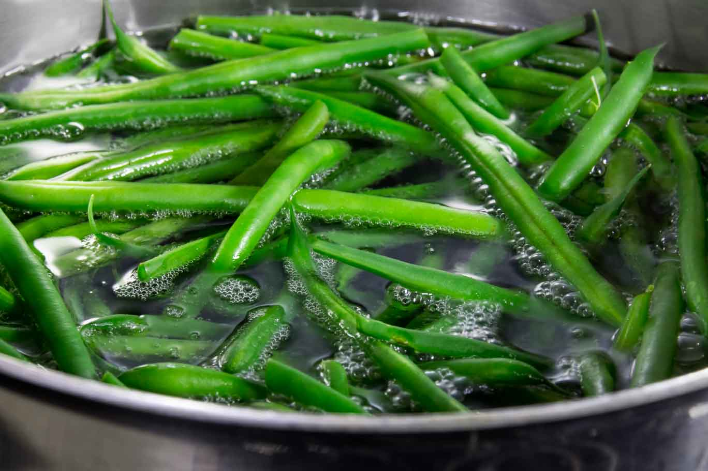
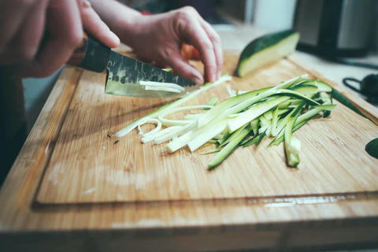
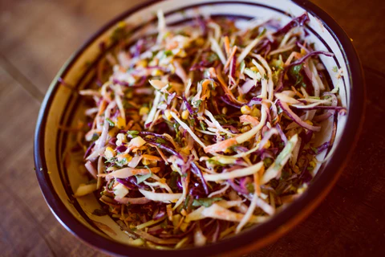
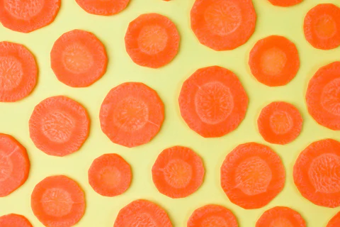
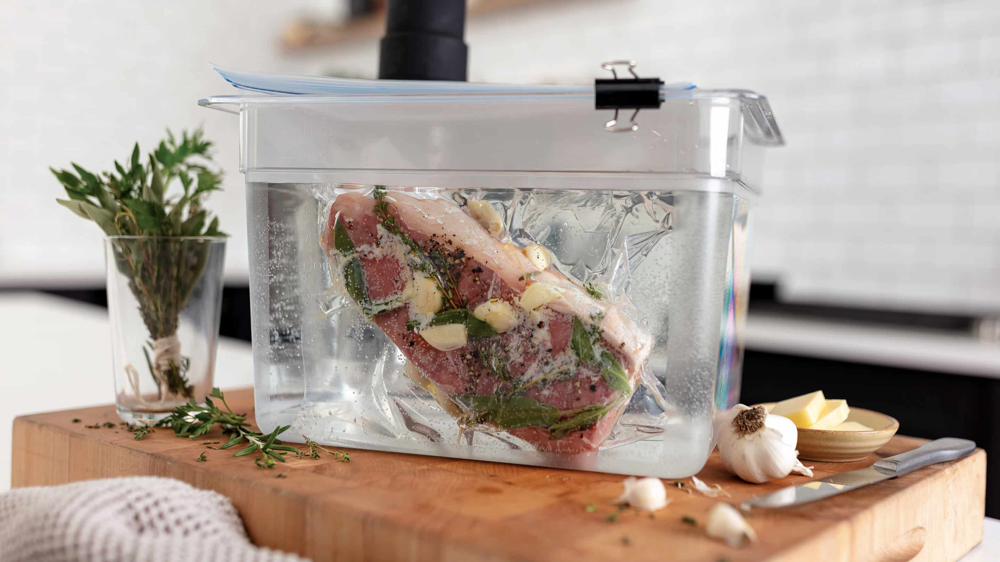
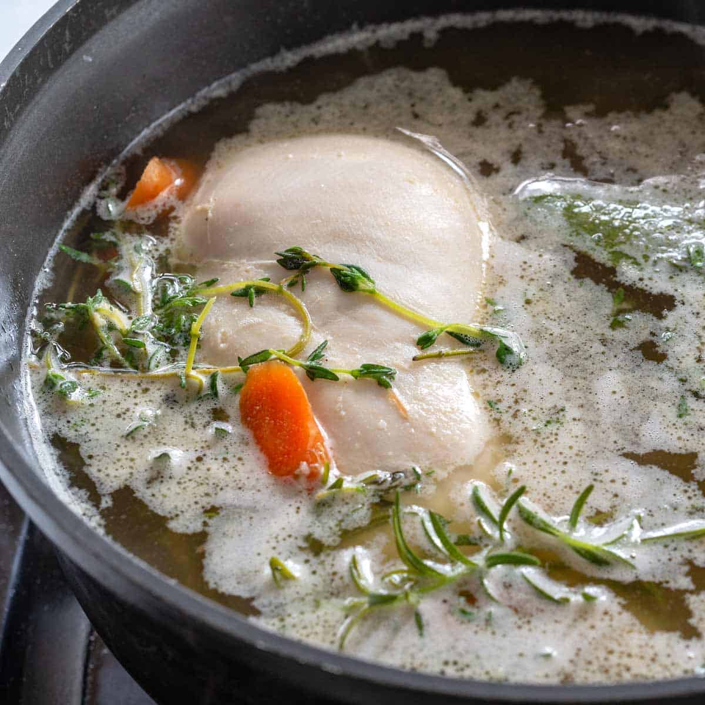
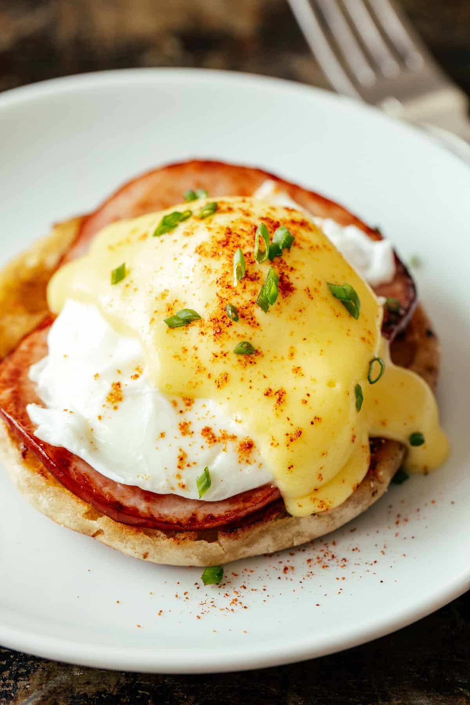
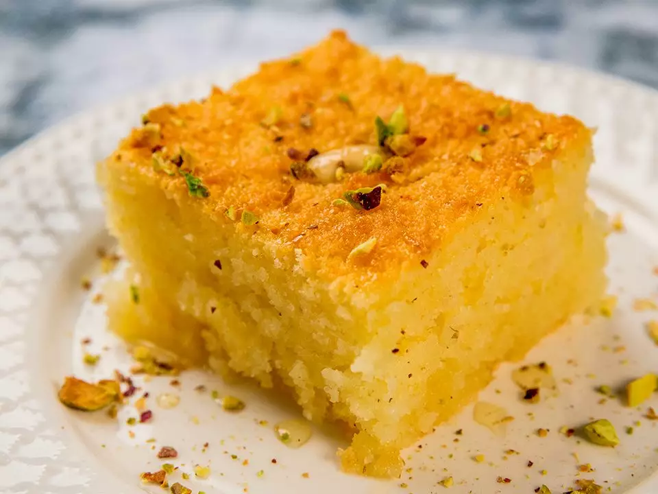
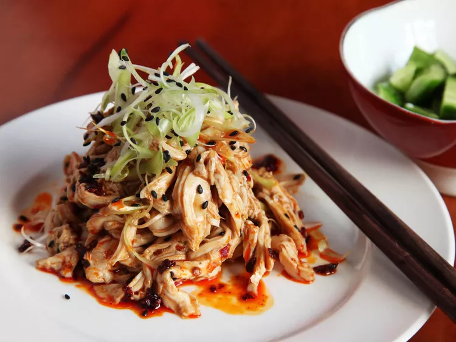

Blanching is a technique where produce like fruits and vegetables are submerged in boiling water, then immediately after are taken out and placed in an ice bath to halt the cooking. This is done so the fruit and vegetables can have a brighter color, deactivates enzymes which can affect the taste, and allows the produce to be stored in its best condition. It is not cooked after this process, and is still raw.



There are many different cutting techniques that can be used for different fruits and vegetables, and different techniques for different dishes. Here are the different methods as such:

Sous Vide is a technique where you vacuum seal the food and then submerge it into water with a precise temperature. This is a very specific cooking technique, and the results cannot be replicated by any other technique. This is because through other methods, you don't have a precise control over the temperature when food is on a grill, in the oven, or on the stove.

Poaching is similar to blanching and sous vide in the sense that it uses water to cook it. Poaching involves gently cooking food in a liquid below the boiling point. It creates a delicate flavor to the food while also using some of the flavor in the liquid to add to the taste.


